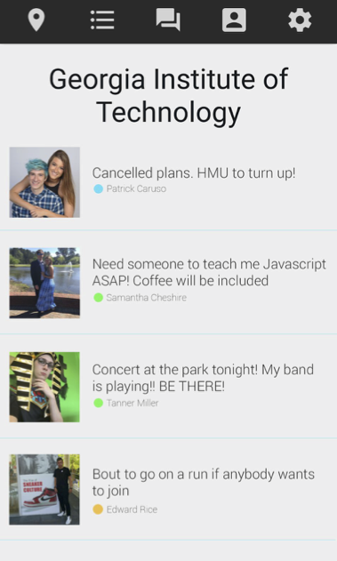
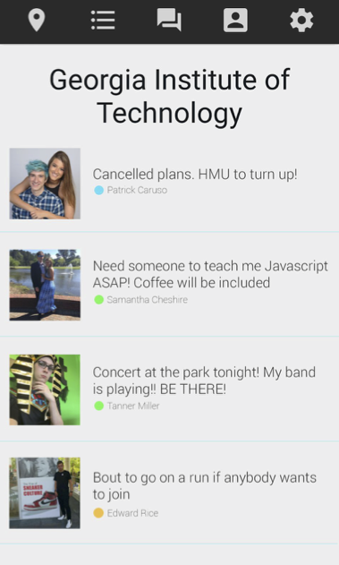
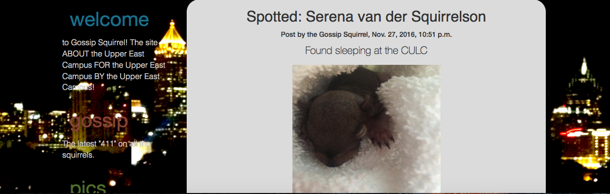
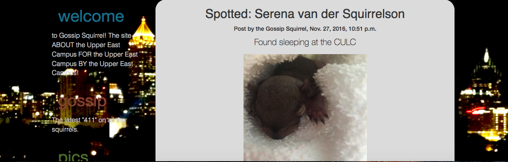

Projects
Alliance for Survivor Care Database


I am working with a team of 5 to create a internal website for organizations that connects survivors of sexual exploitation to resources in the area. We are using the Flask framework, Bootstrap, and Javascript to create a user-friendly website for the organizations.
Clean Water Crowdsourcing

This is a JavaFX application that displays a map of available water sources in the area. I worked together with a team of 5 to create this app. After the JavaFX app was finished I worked on creating a website using Django that displays graphs of virus and contaminant PPM over time using D3.js and allows people to submit water reports.
Ballerz Meet
During HackGT 2016, me and a friend of mine decided to make an Android application that connects people to pickup basketball games in the area. We are now working on new features and adding more elements to the user interface.
Pal
 



Our main goal for Pal is to make people become more closely connected with their communities and meet people different from their usual circle. Pal has a heatmap on the home page to show which areas are the most active. Users can view others nearby and post to their local feed to plan events with people around them.
Ceegllo
This is a web application made to organize a users time in college. It stores all past semesters and grades and has options to plan future semesters. A user can also track their progress in their current classes. Eventually I want to add visualizations to the home page with D3.js to show the user's current status.
Gossip Squirrel
 

At the Georgia Tech Appathon, me and a friend made a website using Django where users can submit gossip about the campus squirrels. The website includes a map that shows 10 recently spotted squirrels and pictures of the favorite squirrels.